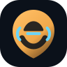

Reliable Chat
Focused messaging, stable navigation, and clean workspace behavior.

Kodiak Connect by Kodiak Holdings Join BetaKodiak Holdings Project
Kodiak Connect is an independent messaging platform focused on reliable chat, private account access, clean workspaces, and long-term cross-platform support.
Product
Kodiak Connect is built for people who want dependable communication without clutter, chaos, or throwaway design.
Focused messaging, stable navigation, and clean workspace behavior.
Simple account access, profile management, and user-focused polish.
Support direction for images, GIFs, screenshots, audio, video, and files.
A clean foundation for future features without sacrificing stability.
Trust
Privacy, reliable account access, and dependable communication are core parts of Kodiak Connect's direction. The platform is being developed carefully, with every beta release focused on making the experience more stable and easier to use.
Platforms
Kodiak Connect is being developed for desktop, mobile, and browser access. The public website lives here; the app portal can move to app.kodiak-connect.com when ready.
Active Beta
Kodiak Connect is currently focused on stability, media reliability, mobile polish, desktop presentation, and preparing the app for broader public use.
Reach out for beta access, support questions, or project updates.
Contact Support